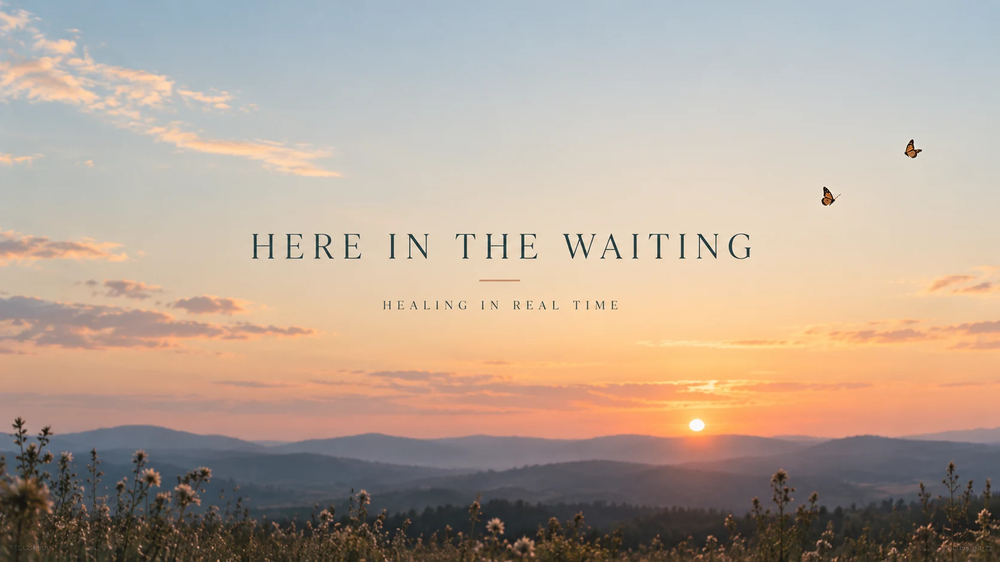
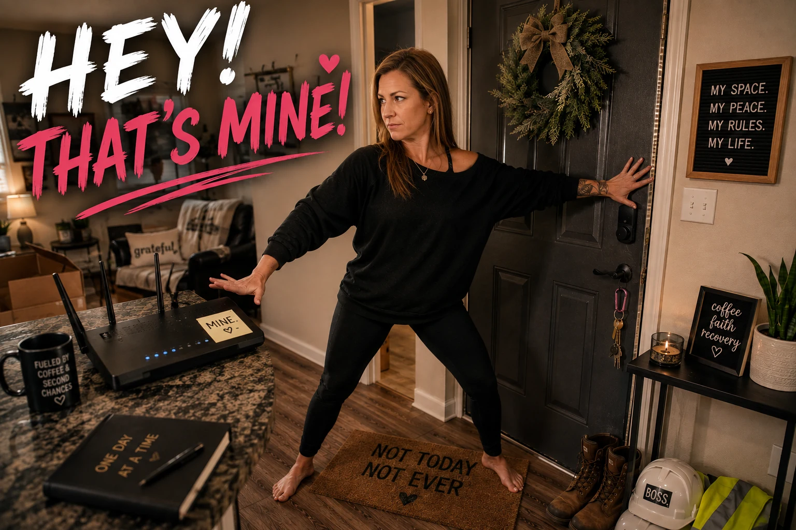
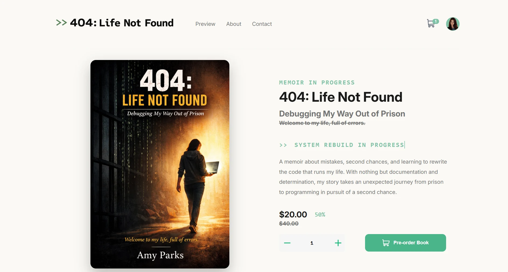
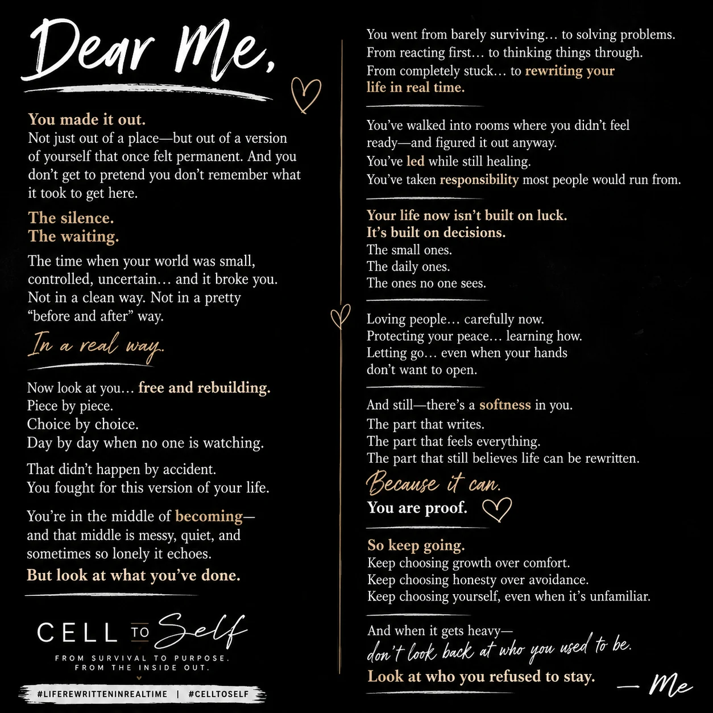
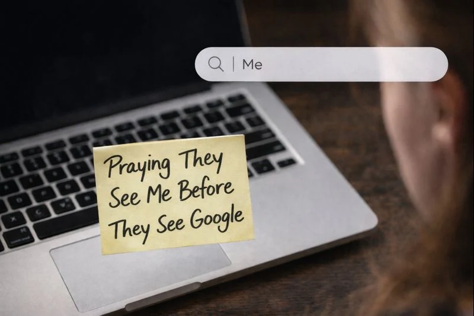

You Get to Decide
I went from fist fighting in county jail to deciding a two-hour chow line wasn't worth my…
Read StoryI went from fist fighting in county jail to deciding a two-hour chow line wasn't worth my…
Read Story
Today was not a good day. I looked at myself and realized I wasn't ready for the kind of relationship I'd been asking God for.…
Read Story
I spent years learning to keep my belongings close and always be ready to run. Then one morning, I found my shampoo sitting in the shower and realized something had…
Read Story
Sometimes I don’t have some huge adventure or crazy story to tell y’all. Sometimes life is just peaceful, quiet, and normal. I think that’s kind of…
Read Story
Hayley is gone. This is her story. Her story with me, for the short time I was blessed to call her mine. I often have to remind myself that she’s gone. I still reach for my phone…
Read Story
After years of having no control over where I lived or where I slept, I finally have a place that’s all mine. My bedroom. My kitchen. My shower. I even named the Wi-Fi “Mine.”…
Read Story

Sometimes walking away isn’t giving up. The day I walked away wasn’t the day I stopped loving someone. It was the day I finally started loving…
Read Story

Seven months ago, I was sitting in prison wondering what my future would look like. Today, I’m packing for Arkansas, getting the keys to my OWN place, sponsoring other women, and…
Read Story
I absolutely refuse to live in self-pity again. So I’m just going to keep suiting up, showing up, and trusting that one day my children will know the woman I’ve…
Read Story
I honestly thought they were going to change their mind and ask for the keys back. Turns out the hardest part wasn’t buying the car… it was becoming the person ready to drive…
Read Story
Five months ago, I was sitting in prison. Today, I have a stable job, a savings account, a new car on the way, and more opportunities than I know what to do with. God is still in…
Read StoryLifetime movie drama. BUT WAIT. A national coding interview. BUT WAIT. A possible move across the country. BUT WAIT. A dream job offer. THERE’S…
Read StoryKicked out of sober living. Moving in with the boss. This was definitely not in the…
Read Story
Good things kept coming through the storms. A driver’s license. A car. Recovery. A job I loved. Feelings I wasn’t supposed to have. What could possibly go wrong?…
Read StoryI still catch myself expecting to wake up in a prison bunk. Instead, I wake up to work, recovery, friendships, new opportunities, and entirely too many things to be grateful for.…
Read Story
I swear my life is boring. Unfortunately, the evidence continues to suggest…
Read Story
A cute guy. A lake house. A screaming girlfriend. A panic-induced Lyft ride. What could possibly go wrong? Everyone loves a good Lifetime…
Read Story
The question wasn’t the hardest part. The hardest part was realizing how quickly people decide who you are after hearing where you’ve…
Read Story
New job. New blog. Same fear I might lose it all. But this time, I’m choosing to show up…
Read StoryYou may think these letters are helping you… but the truth is, you’re helping me just as much. This week reminded me how much can change when you choose growth over old…
Read Story
You don’t get to pretend you don’t remember what it took to get here. This wasn’t handed to you—it was a rebuild. Piece by piece. Choice by choice. And somehow, through all of it……
Read StoryOne of the goals I set in prison was no relationships for six months. Then I met my…
Read StoryI couldn’t attend my coding graduation in person, so they read my words for me. The voice is mine. The name is not. For now, this is how I show…
Read Story
I wrote this in prison during one of the darker stretches. When my mind felt loud.When the fight felt constant.When faith and doubt lived in the same breath. I didn’t edit it…
Read StoryI was jobless one month out of prison. And strangely… I felt…
Read Story
1/1/26 I have a great job right now. I’m doing well. I’m trusted. I’m respected. People like working with me.And every so often, I get this quiet fear that creeps in out of…
Read Story
I wrote this while incarcerated, when my thoughts had nowhere else to go. This poem doesn’t resolve anything. It just tells the truth of who I was trying to…
Read Story
This isn’t a polished reentry story. It’s my first update to the friends I left behind and what real life looks like right after prison: messy, funny, stressful, and filled with…
Read StoryNo stories are in this category yet.